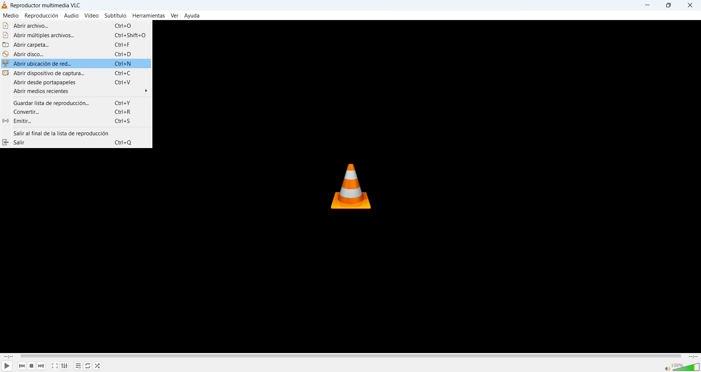
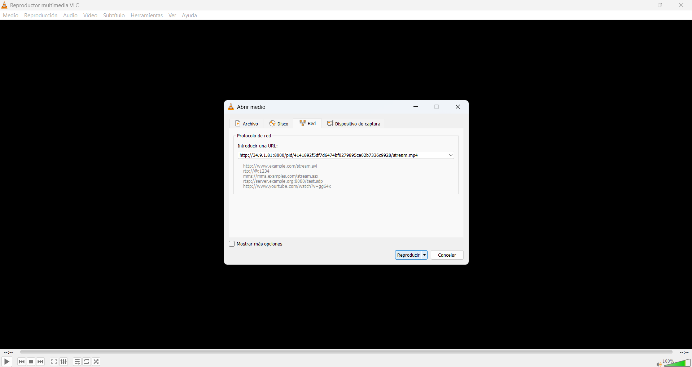
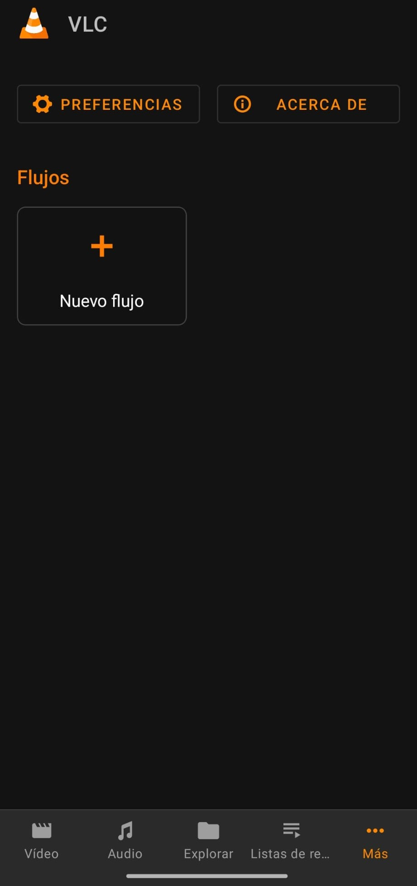
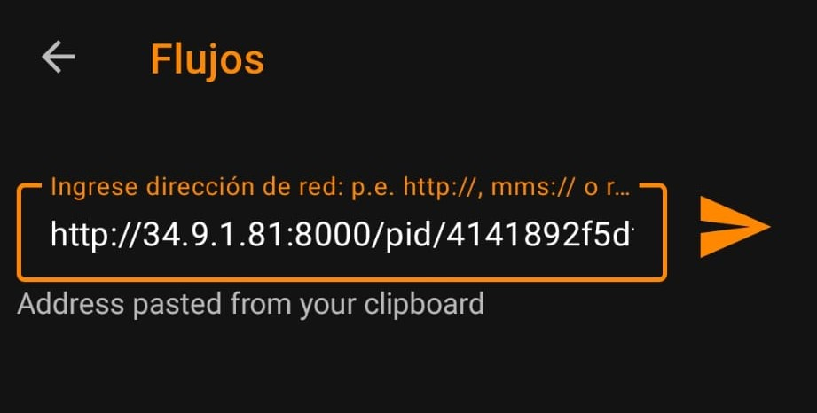

Selecciona tu dispositivo:
1. Abre VLC Media Player
2. Ve a "Medio > Abrir ubicación de red..."
3. Pega el enlace y pulsa "Reproducir"
1. Abre la app VLC
2. Toca el icono de 3 puntos (Más) y elige "Nuevo flujo"
3. Pega el enlace y pulsa el boton de reproducir
4. Despues de darle a reproducir tienes que esperarte unos segundos a que cargue todo para que se abra el reproductor con el contenido preparado. Si ocurre un error te avisa justo al momento de cuando le das a reproducir.
Lista M3U8 con mas de 100 canales en https://lc.cx/ACEVLC
Introduce la URL de la lista en el mismo sitio donde se introducen los enlaces en VLC o descargatela y la reproduces en el VLC